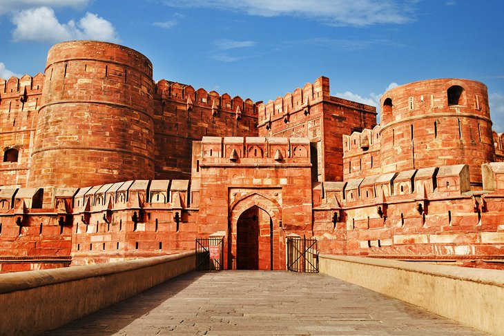
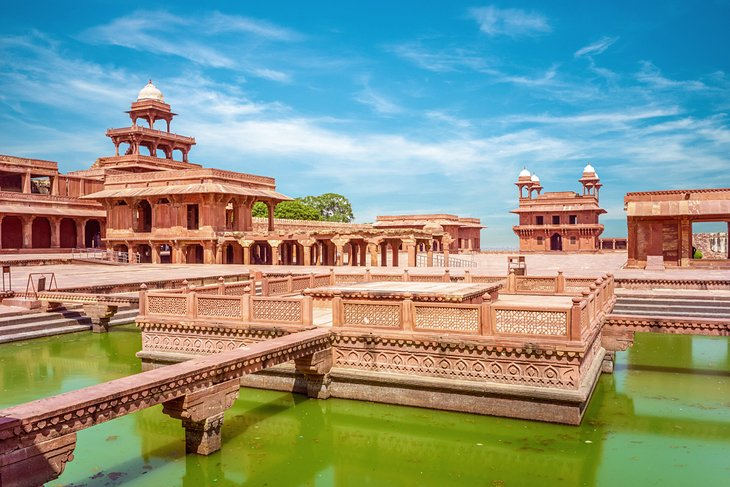

If there was just one symbol to represent all of India, it would be the Taj Mahal. The monument inspires millions of tourists to make the trip to Agra every year, waking up before dawn to see magnificent structure radiate at sunrise. But Agra tops the list of the best places to visit in India for reasons that go beyond India's most famous attraction.
The city in Uttar Pradesh is chock-full of marvelous Mughal monuments, like Itimad-ud-Daulah's Tomb and Akbar's Mausoleum, decked out in hypnotic inlaid marble designs from top to bottom. Plus, tourists can also see another UNESCO World Heritage Site: the Agra Fort. With so many wonders in just one place, Agra is a must-visit city for tourists in India.
| Tour Name | Indian | Foreigner |
|---|---|---|
| Daily Full Day Tour (Fatehpur Sikri, Agra Fort & Tajmahal) | 750/- | 3600/- |
| Half Day Tour (Fatehpur Sikri) | 550/- | 1500/- |
| Child Full Day / Half Day Tour (Below 15 Years) | 550/- | 550/- |
Taj Mahal

The magnificent structure dates back to the 17th century. Mughal emperor Shah Jahan was heartbroken after his beloved wife, Mumtaz Mahal, passed away during childbirth, and decided to pay tribute to her with a white mausoleum. Construction took more than 20 years to complete and required the manpower of around 20,000 laborers.
There's never a bad time to see the Taj Mahal, but it's worth getting here early—the building seems to radiate at sunrise. Tourists can enter the UNESCO World Heritage Site via the west and east gates. Once inside, explore the ornamental gardens, which feature calming water features that reflect the Taj. Then, head inside the Taj itself and admire its perfect symmetry and white marble with elaborate floral cavings and semiprecious stone inlays.
Address: Dharmapuri, Forest Colony, Tajganj, agra
The Agra Fort
The Taj Mahal isn't the only UNESCO World Heritage Site in Agra—the city is also home to Agra Fort, a centuries-old red sandstone fortress that was once the imperial city for a succession of Mughal rulers.
Sightseeing here is like wandering around a city within a city. The most extraordinary building at Agra Fort is Jahangir Mahal, a massive palace that blends stunning Hindu-inspired features (like overhanging enclosed balconies) with Central Asian architectural elements (such as the signature pointed arches). Inside, tourists can see the gilded central court where royal women once passed their days.
Tourists can also check out a range of other noteworthy structures, including Anguri Bagh (a courtyard with puzzle piece-like outlines of gardens around water channels), Khas Mahal (a palace with pavilions made of white marble and red sandstone), Musamman Burj (an octagonal tower with intricate marble inlay work), and Diwan-i-Khas (a gathering hall featuring a pair of black and white marble thrones).
Akbar's Mausoleum

For nearly 50 years, emperor Akbar the Great ruled the Mughal kingdom, tripling its empire to include most of the northern half of the Indian subcontinent. His remains (along with those of two of his daughters) can be found at what is now one of the most popular tourist attractions in Agra, Akbar's Mausoleum.
The complex features a marvelous sandstone and marble tomb with striking marble inlay in a variety of colors. The structure is surrounded by Mughal gardens that are home to deer, antelope, monkeys, and even a few peacocks.
If you happen to travel with a compass, whip it out at this site. You'll notice that the tomb faces east—a contrast to nearly all other Mughal tombs, which point toward Mecca.
Address: Sikandra, Agra
Fatehpur Sikri
Just an hour's drive from the Taj Mahal, Fatehpur Sikri makes for a worthwhile day trip from Agra. The city, once the capital of the Mughal Empire some 500 years ago, was built by Akbar as a salute to the famous Sufi saint, Shaikh Salim Chishti, who accurately predicted the birth of an heir. Residents abandoned the city not long after it was built, when water supplies ran too low.
Tourists can now explore the well-preserved remains of this red sandstone ghost town, still surrounded by a fortification wall. Check out the Jama Masjid, a mosque and one of the first buildings finished in the city. Then, explore the three palaces, built for each one of Akbar's wives. They combine a variety of religious-inspired architectural styles that honor the women's individual spiritualities.
Finally, get off the beaten path and stroll to Hiran Minar, a circular spiked tower covered with stone elephant tusks, atop which Akbar himself supposedly gazed at wildlife.
Dig in deeper to this incredible site with a visit to the Archaeological Museum, near the Diwan-i-Am main gate. It contains four galleries filled with treasures from the Mughal era and beyond, including grey ware pot shreds, terra-cotta lamps, mini human heads in stone, jewelry molds, and much more.